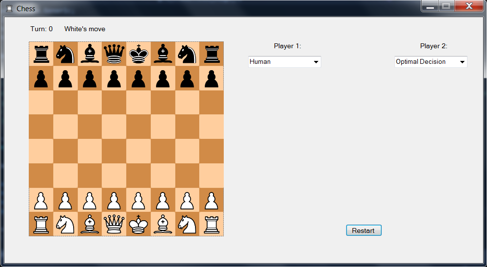
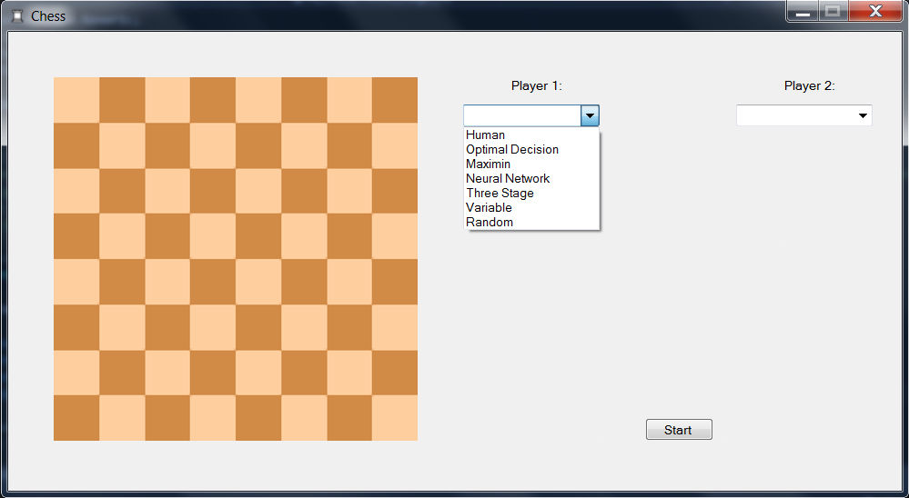
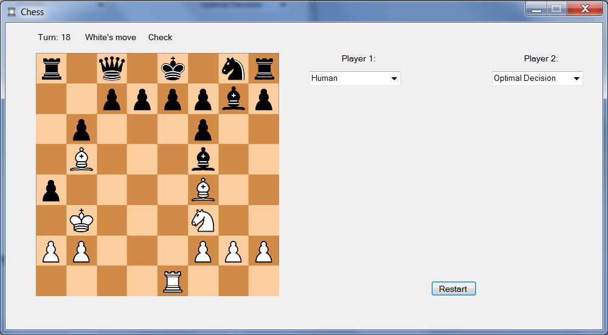

Personal Projects:
Chess AI
AI Playing Chess
This is a C# project that I started over the summer of 2016. I did this to learn more about different forms of artificial intelligence (AI). I used the classic game of Chess as my base because it shows strategy with very little randomness to it.
I built both the Chess base and the several different forms of AI seen within this project.
About the AIs
 For the AI of this project, I looked into different algorithms that could be used for Chess and learned about them. Then I programmed in a way that allows them to figure out the optimal move that will give the AI the best result. There are several different types of AI that I used for this project.- Optimal Decision Making with Uncertainty AI
This AI focuses on the idea of Optimal Decision Making. Through the use of many variables, it looks up to the next turn and determines the best move to make.
Optimal Making has three main parts:
- Predicting the outcome of a decision
- Assigns a value to that decision
- Finds the decision that maximizes the value
This allows the AI to makes judgements of each possible move do the one that gives itself the greatest advantage over the opponent.
This AI is the smartest AI that I have created.
- Maximin/ Minimax AI using Alpha-Beta Pruning
This AI implements the minimax algorithm which makes use of Alpha-Beta pruning and Zero-sum pruning. This makes this AI a depth-first sorting algorithm.
A Maximin algorithm looks to minimize the worst possible scenario that could occur from the next player's move. This is done by looking at all possible moves that is player could make. Then it looks at all possible moves that the other player could do off that move. This will determine the worst possible combinations of moves and whichever one is the highest, that is the move that this AI will take.
This process takes a long time, especially if the AI is looking several moves ahead. Pruning is used to cut off paths that do not have any promise to them.
- Alpha-Beta Pruning is a search algorithm that stops completely evaluating an action when at least one possibility has been found that proves the action to be worse than a previously examined action.
- Zero-sum Pruning uses the idea that the worst action for player 1 is the best action for player 2. It seeks to maximize player 1's action.
Because this algorithm uses depth-first searching, the main problem became the large amount of time that it takes to find the best possible choice. Pruning helps cut this time dramatically.
- Deap Learning Neural Network
This AI focuses on making a neural network over many playtests to create evolve an AI to be able to win the Chess game. The algorithm that I use for this AI is based on the paper 'Evolving Neural Networks through Augmenting Topologies' by Kenneth O. Stanley & Risto Miikkulainen.
Just like natural selection and evolution, this algorithm creates many topologies and test them. It then takes the best topologies and mates them together and also mutates them. This process is repeated until it creates a topology that is able to win the Chess game.
This AI was one of the original reasons I got into AI and I find it very interesting to study and figure out ways to make AI teach themselves to do better.
THIS HAS NOT BEEN IMPLEMENTED FULLY YET.
- Three Stage Chess AI
This AI is based off of the idea that in a game of Chess, there are three phases to it: the opening, the mid-game, and the end game. This AI gets separated into those three phases and does different things depending on the phase it is in.
- Opening: The phase where the AI develops its' pieces, gets their king to safety, and tries to control the center of the board.
- Mid-Game: The phase where the AI attacks with and defends its' pieces.
- End Game: The phase where most pieces are off the board and the king is usually checked.
THIS HAS NOT BEEN IMPLEMENTED FULLY YET.
- Variable Modifier AI
This AI is the same as the Optimal Decision Making AI, but it allows the user to change the values of the variables that the AI uses.
THIS HAS NOT BEEN IMPLEMENTED FULLY YET.
- Random Choice AI
This AI is used as a control to test other AIs in this project against. What it does is looks at all possible moves that can be made by the specific side, and choose one at random. It is meant to show that my other AIs are smarter than random.
About the Chess Base
It is a digitalization of the game Chess. It has all the same rules and movements as the game, from normal Bishop movements to Pawn's en passant move. It also displays all the possible moves that a selected piece can be moved to.
The most difficult part of this piece of my personal project was figuring out if a king was in check or in checkmate. This was hard because when a king was got checked, I needed to figure out if the king could move or figure out if another piece could do something that would stop the king from being taken.
This took me about 3 weeks to create and work out all the bugs.
Download AI Chess by Noah Parker
Personal Projects:
The Abomination Project
The Abomination Project
This project is was originally created by a high school friend named Peter Cowal and me. It was originally coded in Java and currently am in the process of converting it to C#.
Originally, this game was made at a 24 hour hackathon by Peter Cowal and myself. After the hackathon, I decided to take it upon myself and add more to it. I implemented things like version history, more items, more enemies, added more to the main menu, and I modified the dungeon generator. It also contains an inventory system, leveling up, difficult levels, randomly generated dungeon floors, pre-made dungeon floors, fog of war, weapon range, and text output.
The primary thing that I liked about this project was that it was really my first game that I felt very passionate about continuing after others stopped working on it. That is why I am moving it over to C# so I can continue working on it in my spare time.